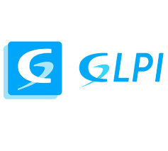

Implementação do GLPI e Uso do MkDocs
Implementação do GLPI
A implementação do GLPI (Gestionnaire Libre de Parc Informatique) é essencial para a gestão eficiente dos recursos de TI. O GLPI é uma ferramenta de código aberto que ajuda na administração de inventário de hardware e software, além de facilitar a gestão de tickets de suporte.
Vantagens do GLPI:

- Gestão Centralizada: Permite gerenciar todo o inventário de TI, incluindo hardware, software, e dispositivos de rede, em um único sistema.
- Abertura de Tickets: Facilita o registro e acompanhamento de solicitações de suporte, melhorando o atendimento aos usuários.
- Relatórios Detalhados: Gera relatórios detalhados que ajudam na tomada de decisões e na análise de desempenho da equipe de TI.
- Personalização: Altamente personalizável, permitindo a adaptação às necessidades específicas da organização.
- Comunidade Ativa: Suporte de uma comunidade ativa que contribui com plugins e melhorias contínuas.
Uso do MkDocs
O MkDocs é uma ferramenta de geração de sites estáticos voltada para a criação de documentação. Ele utiliza arquivos Markdown para transformar conteúdo em sites bonitos e navegáveis.
Vantagens do MkDocs:

- Facilidade de Uso: Simples de instalar e configurar, permitindo que qualquer pessoa crie documentação rapidamente.
- Formato Markdown: Utiliza Markdown, uma linguagem de marcação fácil de aprender e usar, para criar documentos.
- Design Atraente: Gera sites com um design moderno e responsivo, facilitando a leitura em qualquer dispositivo.
- Visualização em Tempo Real: Possibilita visualizar as mudanças em tempo real durante a edição.
- Integração com GitHub Pages: Facilita a publicação da documentação na web através do GitHub Pages, sem custo adicional.
Ambas as ferramentas, GLPI e MkDocs, são poderosas e gratuitas, oferecendo soluções robustas para gestão de TI e documentação, respectivamente. A implementação e uso adequado dessas ferramentas podem melhorar significativamente a eficiência e organização de uma equipe de TI.